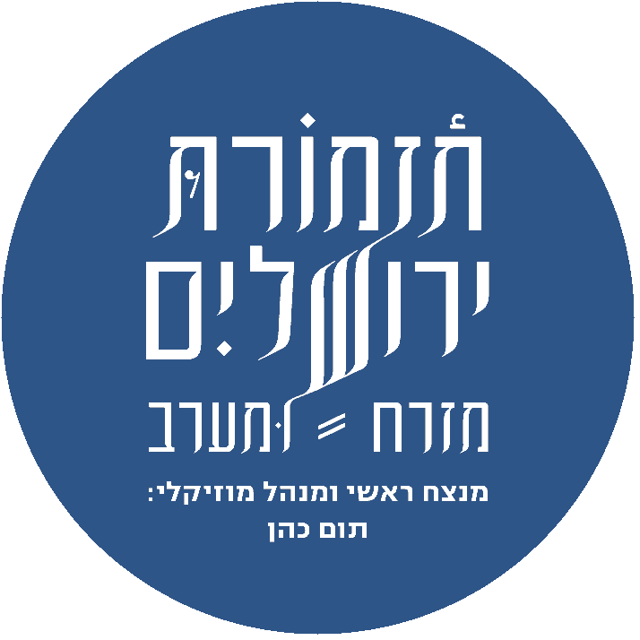

Inverse roundel · dark variant
Navy roundel, cream wordmark. For use on cream, white, or photographic backgrounds. Never reproduce the logo without the conductor lockup unless a separate mark is approved.
assets/logo-dark.png